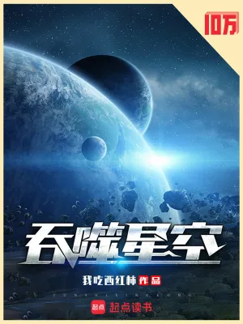
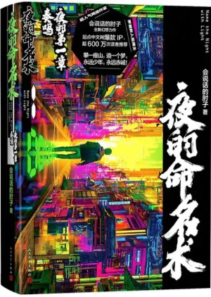
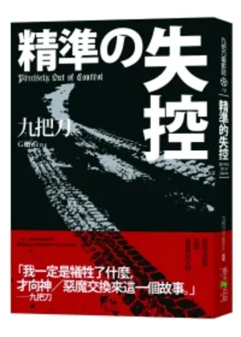

科幻小說心得
這裡的科幻以中文網文為主，題材很雜：番茄的《吞噬星空》《宇宙職業選手》一路升級打到宇宙，《修真四萬年》把修真寫成星際文明，《這遊戲也太真實了》《超神機械師》是玩家和遊戲異界，《從紅月開始》《長夜餘火》是詭異和廢土。九把刀的《精準的失控》也放在這裡，是少數不靠升級、靠結構取勝的一本。
想要熱血升級，選《吞噬星空》；想要設定和懸念，選《夜的命名術》；想讀短一點、一兩天能看完的，選《精準的失控》。
第一次讀科幻，先讀這三本

《吞噬星空》我吃西紅柿 5升級換地圖的標竿，每開一張地圖，世界就大一圈。
《夜的命名術》會說話的肘子 5設定一流、主角夠聰明，我是一口氣追完的。
《精準的失控》九把刀 5五段故事最後扣成一個圓，結構最漂亮的九把刀。全部科幻小說心得
靈境行者賣報小郎君小說・科幻這本把都市異能、副本闖關和職業體系揉在一起，設定非常有意思，主角一家人的互動又好笑。前半本的副本一個比一個精彩，我讀得很快樂。後段出國之後的評價在網路上不太好，我自己還是看得很開心，五顆星。5★
從紅月開始黑山老鬼小說・科幻詭異題材裡最溫暖的一本。紅月升起之後，世界上到處是精神污染，主角陸辛是個看起來很普通的上班族，身邊跟著只有他看得見的家人。前期的詭異感和神經質的幽默非常迷人，結局也收得漂亮。中後期變成戰力碾壓，所以我給 4 顆星。4★
修真四萬年臥牛真人小說・科幻把修真寫成星際科幻的熱血長篇。四萬年後的修真者不躲在山裡，他們是工程師、軍人、科學家，是整個文明的支柱。主角一路從垃圾場打到星海，每個反派都有一套站得住的道理。篇幅超長、前期套路重、說教味濃，所以我給 4 顆星。4★
這遊戲也太真實了晨星LL小說・科幻玩家流（也有人叫第四天災流）的代表作。主角在核戰後的廢土上當避難所管理者，把地球上的玩家當成勞動力召喚過來，玩家以為自己在玩一款超擬真的遊戲。前半本的種田和經營非常好看，後半本篇幅拉太長，所以我給 4 顆星。4★
超神機械師齊佩甲小說・科幻遊戲異界文裡完成度很高的一本。主角穿進自己玩了多年的星際網遊，變成一個 NPC，手上握著未來每個版本的劇情。他能升級、能造機械，還能反過來給玩家發任務。前中期節奏和爽度都很好，無敵之後張力下降，所以我給 4 顆星。4★
長夜餘火愛潛水的烏賊小說・科幻烏賊在《詭秘之主》之後寫的廢土小說。舊世界毀了，一支四人小隊開著車在荒野上找真相，主角還是個腦迴路異於常人的怪咖。設定和戰鬥設計依舊精緻，小隊的相處很有味道。節奏慢、高潮不夠高，我給 4 顆星。4★
宇宙職業選手我吃西紅柿小說・科幻番茄的書我看得很放鬆，這本尤其順。退役選手靠虛擬世界重新站起來，一路打到宇宙，節奏快、不虐、不拖，兩百萬字幾乎是一口氣讀完的。我給四顆半。4.5★
吞噬星空我吃西紅柿小說・科幻這是我心中番茄最好的一本，也是「升級換地圖」這種寫法的標竿。從地球上一個準備考試的高三生開始，地圖一層一層往外開，每開一次都讓人覺得世界又大了一圈。五顆星，沒有猶豫。5★
夜的命名術會說話的肘子小說・科幻設定一流，主角夠聰明，熱血的地方真的會起雞皮疙瘩。我是一口氣追完的，中間幾乎沒停過。五顆星。5★
精準的失控九把刀小說・科幻我看過的九把刀裡，這本的結構最漂亮。五段看起來沒關係的故事，到最後扣成一個圓，闔上書的時候我是真的愣了一下。5 顆星。5★